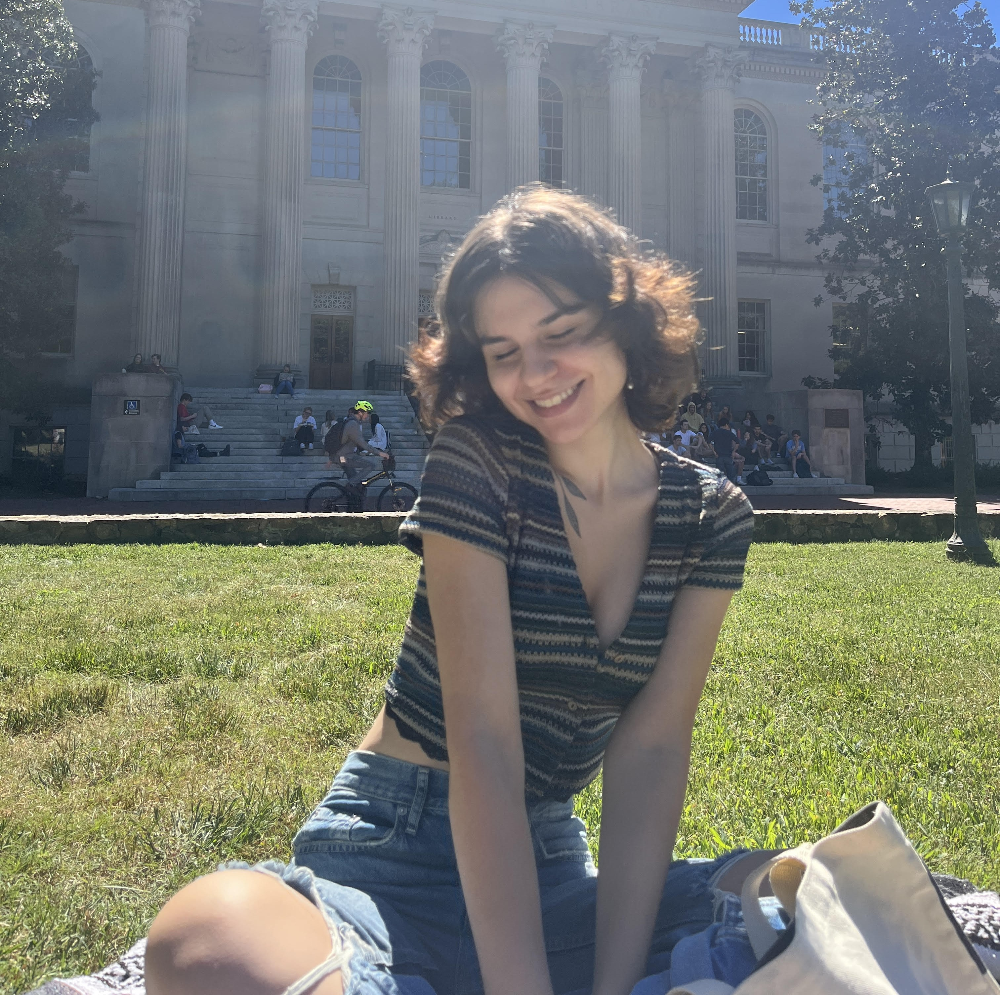

Elysian Candles strives to produce the most eco-friendly and sustainable products which is why every component of our candles is either compostable or reusable! From the dish it is poured in to the wax that is poured into said dish, our product is extremely friendly to our planet and your body. Our candles are entirely non-toxic, and unscented options allow for a wide array of costumers to enjoy our products.
Founded by Parmis Maeve Kimia, Elysian is a minority-woman owned candle business located in Chapel Hill North Carolina. Elysian was started on September of 2022 and is set to fully launch in Student-Made UNC on January of 2023. In Student-Made UNC, Elysian will finally be part of a group of creative students sharing a platform to share their art with the public.
Parmis Maeve Kimia is the founder and owner of Elysian, a minority-woman owned candle business located in Chapel Hill North Carolina. Maeve is a student at the University of North Carolina Chapel Hill, studying economics with two minors in data science and entrepreneurship. Any time spent outside of school is either dedicated to her hobbies or her business. In her spare time, Maeve enjoys reading and watching film.
Maeve has always dreamed of having her own business, and eventually expanding it to other forms of products. In the future, Maeve aspires to not only have a successful candle business, but to also have a coffee shop and a plant nursery to accompany it! Being an entrepreneur is what fulfills Maeve and she hopes that she can continue doing what she loves for the rest of her career.
